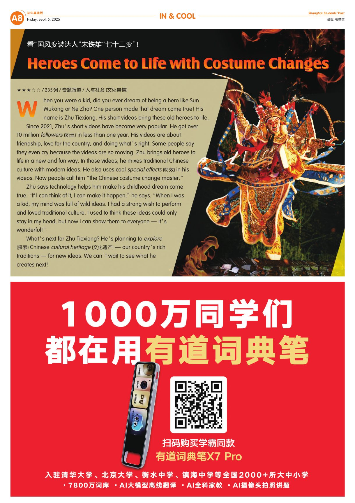
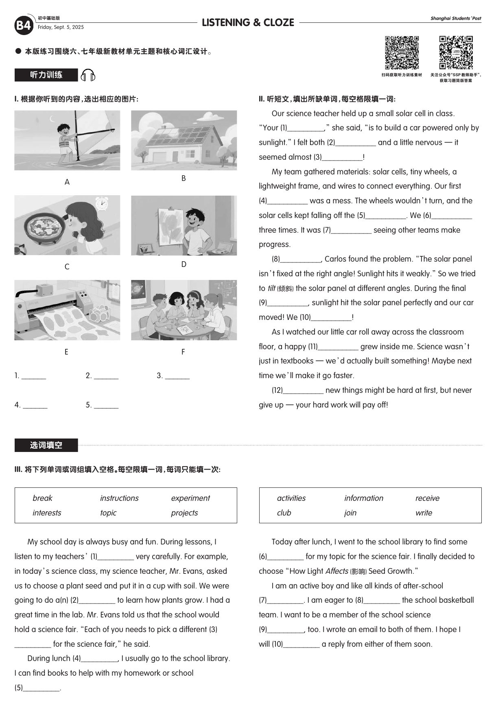

A1 · SCHOOL LIFE
From ABCD to A+
一次暑假作业的教训：认真完成任务，比担心更省时间。
保留原报纸的全部 A、B 版面。A 版浏览阅读材料与词汇，B 版查看与报纸文章对应的语言练习、阅读理解和深度阅读题。
一次暑假作业的教训：认真完成任务，比担心更省时间。
机器人读博、上海宠物公交等新闻，一页读懂新鲜事。
了解传统拜师礼与欧洲学徒的成长旅程。
黑猩猩会用工具、会学习，也会传承有用的技艺。
走进成都，体验大熊猫保育与四川文化。
含 A1、A5、A7、A4 等文章的词汇、理解与写作训练。
点击页码阅读原报纸全部内容。每一页保留原有文章、插图与词汇表。

A 版第 1 个版面 · In & Cool
完整保留听力、选词填空、语言知识、阅读理解、深度阅读和写作任务。

B4 · 听力训练与选词填空